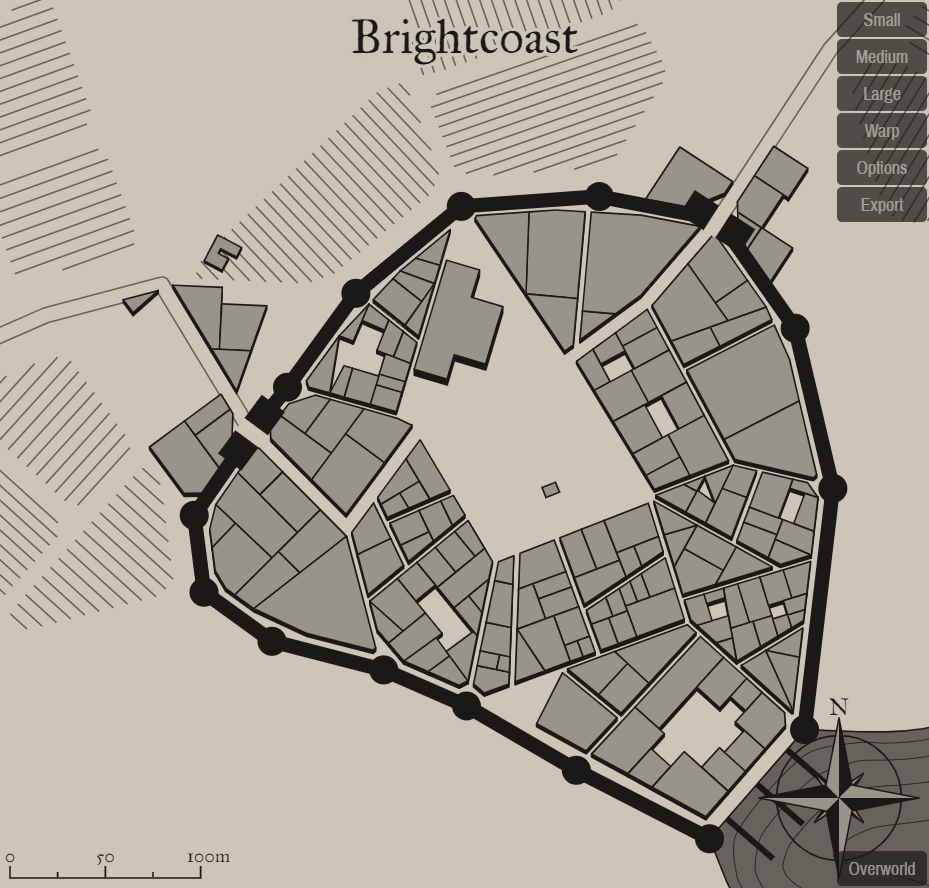

Brightcoast
A mystical settlement in a fantastical world

Background
Add background flavor.
1
PAGE 1| Brightcoast
Settlement Features
Brightcoast is a large town 2,001-5,000 located in the plateau region of the areas greater savanna. The settlement seems to be relatively young. Brightcoast and the local surroundings are under the control of distant colonists.
Demographics
- Name: Brightcoast
- Real population: 2116
- Population: Large Town 2,001-5,000
- Number by race: Human 40%, Dwarf 10%, Elf 10%, Gnome 10%, Halfling 10%, Half-elf 15%, Half-orc 5%,
- Wealth: 4
- Age: 4
- Alignment: 1
- Government Type: Distant Colonists - The settlement’s ruler is a figure-head for a distant colonial power: a magistrate, governor, or minor landed noble. He or she may have limited autonomy in running the colony, but ultimately answers to the colony’s founding power. Colonies are typically seen as resources for their founding government, not having much political power or influence. The colony’s government is more concerned with making sure trade with and taxes paid to the homeland flow efficiently then the welfare of the colony’s inhabitants.
- Settlement Trait: Resettled Ruins
- Number Of Wards: 11
- Number of Districts: 3
Industry and Economy
- Primary Raw Materials: Farming
- Shops of Note: Grain Mill, Artist: Painter, Engineers / Archetech, Stable.
- Number Of Inns/Taverns: 2
- Inns/Taverns of Note: Gross Harpy Pub, The Seeker and Fishmonger.
Districts
Upper West Spadlork
Get desc
Newup Row
Get desc
Downtown Scroppand
Get desc
Taverns / Inns
Gross Harpy Pub
Location
Upper West Spadlork
Description
From the outside it looks uninviting, dull and uncomfortable. Timber and well-crafted wooden beams make up most of the building's outer structure.
Innkeeper
Bob
Menu
- Stewed Onions, Mug of Cider (5 cp)
- Braised Oxtails with Mushrooms (6 sp)
- Goose eggs, Currants, Corn pone (1 sp).
- Grilled Fillet of Salmon (6 sp)
- Mutton, Lettuce and Tomato (5 sp)
The Seeker and Fishmonger
Location
Upper West Spadlork
Description
From the outside it looks homey, humble and warm. Logs and wooden pillars make up most of the building's outer structure.
Innkeeper
Bob
Menu
- Roasted Cabbage, Mug of Stout (4 cp)
- Smoked Fresh Trout Fillets (4 sp)
- Stewed Mutton and Whey Cheese, Tankard of Perry (8 cp)
- Stewed Sausage and Soft Cheese, Tankard of Stout (8 cp)
- Chicken Liver Pate and Bread (3 sp)
2
PAGE 2 | Brightcoast